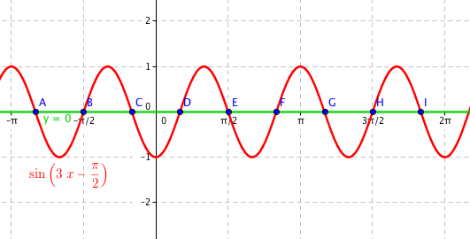

Goniometrické rovnice
Goniometrické rovnice jsou rovnice, které obsahují nějakou goniometrickou funkci, tedy sinus, kosinus, tangens nebo kotangens.
Základní goniometrická rovnice #
Mějme rovnici sin x = 0. Pro která x bude tato rovnice platná? Kdy se sinus rovná nule? Začneme tím, že se podíváme na graf:
Zjistíme, že sin x se rovná nule docela často. Konkrétně pro hodnoty −π, 0, π, 2π a mnohé další. Protože sinus je periodická funkce, budou mezi jednotlivými řešeními rovnice pravidelné intervaly – v tomto případě intervaly o délce π. Proto množinu všech řešení této rovnice můžeme zapsat jako množinu, označme ji R, kterou definujeme takto:
Jsou to tak všechny K-násobky čísla Pí, kde K je celé číslo. Tím jsme popsali množinu všech řešení rovnice sin x = 0.
Připomeňme, že sinus a kosinus mají obor hodnot v intervalu \(\left<−1, 1\right>\), tedy rovnice sin x = 2 nemá žádné řešení, protože nejsme schopni nalézt takové x, pro které by výraz sin x měl hodnotu větší než jedna. Samozřejmě rovnice 3 · sin x = 2 již řešení má, protože můžeme celý výraz podělit trojkou a na pravé straně již bude číslo menší jedničce. Hledali bychom kořeny rovnice sin x = 2/3.
Výpočet jednoduchého příkladu #
Jednoduché goniometrické rovnice řešíme tak, že například z grafu či z jednotkové kružnice vyčteme jejich hodnotu a zjistíme periodu, kterou k výsledku přičteme. Příklad, vyřešte rovnici
Graf funkce sinus máme nahoře, takže se koukneme, kdy má křivka hodnotu \(\frac12\). Zjistíme, že je to v případě 1/6π a 5/6π. Důrazně doporučuji naučit se základní tabulkové hodnoty goniometrických funkcí, bez nich vám ani kuk do grafu nepomůže.
Nyní budeme muset určit periodu, abychom věděli, jak zkonstruovat množinu všech řešení. Funkce sinus má periodu 2π – když se podíváte na graf, zjistíte, že vždy po 2π se funkce začíná opakovat.
Pokud je tak jedno řešení rovnice 1/6π, tak i jakékoliv číslo 1/6π + 2Kπ, kde K je celé číslo, musí být řešením rovnice, protože v tomto místě má funkce sinus stejnou funkční hodnotu. To 2K jen značí, že chceme jen sudá celá čísla. Když za K dosadíte jakékoliv celé číslo a vynásobíte ho dvěma, získáte sudé číslo. Úplně stejně pro druhý kořen, 5/6π. V bodech 5/6π, 5/6π + 14π a 5/6π − 82π má funkce sin x stejnou funkční hodnotu, proto budou řešením rovnice všechna 5/6π + 2Kπ.
Napíšeme výslednou množinu R, ta bude sjednocením obou předchozích výsledků:
Graficky bychom mohli řešení znázornit jako průnik grafů funkce sin x (červený graf) a funkce \(y = \frac12\) (zelený graf).
Např. pokud bychom za K dosadili K = 0, pak bychom získali řešení:
Tedy x1 = 1/6π a x2 = 5/6π. Na obrázku tomu odpovídají body B a C, protože jejich x-ová souřadnice je právě 1/6π, respektive 5/6π. Pokud bychom dosadili K = 1, získali bychom body D a E.
Substituce #
Pokud máme ve funkci nějaký složitější výraz, můžeme použít substituci, neboli nahrazení. Například chceme-li spočítat výsledek rovnice sin 2x = 1, nahradíme si (provedeme substituci) a = 2x a dále již počítáme s rovnicí ve tvaru sin a = 1 stejně jako jsme si ukázali v předchozí kapitole. Substituce obvykle probíhá tak, že vezmeme argumenty funkce, v tomto případě 2x, a na místo nich napíšeme nějakou jinou neznámou. Můžeme si ji pojmenovat celkem jakkoliv, tady jsme zvolili název a. Mohli bychom klidně provést substituci q = 2x nebo pomeranč = 2x a pak psát sin pomeranč = 1.
Substituce nám tak zjednodušuje výraz, který právě počítáme. S tím, že výraz a je ve skutečnosti rovný 2x, se vypořádáme později.
Nyní tak řešíme rovnici sin a = 1, přičemž a je neznámá. Hledáme tak, kdy je sinus roven jedné. Vyjde nám, že sinus se rovná jedné při hodnotě π/2 + 2Kπ. Kořeny rovnice sin a = 1 jsou tak hodnoty množiny
Nakonec si ještě musíme vzpomenout na naši substituci – musíme ji vrátit zpět. Víme, že řešením rovnice sin a = 1 jsou prvky z předchozí množiny R. Jenomže my chceme znát řešení jiné rovnice, sin 2x = 1. Přitom ale víme, že a = 2x.
Zkusíme si z množiny řešení R vzít jedno konkrétní, například pro K = 1 získáme konkrétní řešení a = π/2 + 2π. V tomto bode má rovnice sin a = 1 řešení. Protože a = 2x, tak zároveň platí, že 2x = π/2 + 2π (jenom jsme místo a napsali 2x).
Nás ale nezajímá 2x, nás zajímá hodnota x, takže celou rovnici vydělíme dvěma. Tím získáme rovnici x = π/4+π. Získali jsme tak jedno konkrétní řešení rovnice sin 2x = 1.
Pokud chceme získat všechna řešení, musíme tuto úpravu udělat se všemi prvky množiny R. Sestavíme tak rovnici takto:
a osamostatníme x, což znamená, že celou rovnici vydělíme dvěma:
To je výsledné řešení. Ještě to zapíšeme množinově jako novou množinu R’:
Správnost řešení si opět můžeme ověřit graficky. Červenou je graf funkce sin 2x a zelenou funkce y = 1.
Pokud za K dosadíme K = 0, získáme x = π/4, což představuje bod C. Pokud dosadíme K = 2, získáme x = π/4 + 2π, což představuje bod E.
Vzorce #
Připočítání s goniometrickými rovnicemi se často využívají nejrůznější vzorce, které byste měli znát. Některé jsou základní, jiné už jsou složitější. Goniometrické vzorce se přestěhovaly na vlastní stranu, tak se koukněte tam.
Příklady #
Vyřešte rovnici sin (3x−π/2) = 0.
Použijeme jednoduchou substituci a = 3x−π/2 a vyřešíme rovnici sin a = 0. Už víme, že sinus je roven nule pro a = Kπ. Dosadíme tak zpět substituci a vypočítáme rovnici:
\[ 3x-\frac{\pi}{2} = K\pi \]Nejprve převedeme π/2 na levou stranu, tj. přičteme k rovnici π/2:
\[ 3x = K\pi + \frac{\pi}{2} \]A teď rovnici vydělíme třemi:
\[ x = \frac{K\pi}{3} + \frac{\pi}{6} \]Výsledkem je tak množina R1, definovaná takto:
\[ R_1 = \left\{\frac{K\pi}{3} + \frac{\pi}{6}|K\in\mathbb{Z}\right\} \]Opět obrázek:
Graf funkce sin (3x−π/2) a y = 0Pro K = 1 dostáváme x = π/3 + π/6 = π/2, tedy bod E.
Vyřešte rovnici cos2x − sin x = 1.
Jako první využijeme vzorce a rozložíme cos2 x na 1 − sin2 x. Dosadíme zpět do rovnice a dostaneme:
\[\begin{eqnarray} 1-\sin^2x-\sin x &=& 1\\ \sin^2x+\sin x &=& 0 \end{eqnarray}\]Nyní vytkneme sin x:
\[ \sin x (\sin(x) + 1) = 0 \]Protože jsme dostali levou stranu rovnice do tvaru součinu a na pravé straně máme nulu, budeme zvlášť řešit rovnice sin x = 0 a sin(x) + 1 = 0, protože celá levá strana bude nulová, pokud bude nulový alespoň jeden činitel.
Rovnici sin x = 0 už máme několikrát vyřešenou, řešením jsou x tvaru Kπ, kde K je celé číslo.
Druhou rovnici, sin(x) + 1 = 0 převedeme na rovnici sin(x) = −1. Sinus je roven minus jedné pro hodnoty 3/2π + 2Kπ.
Všechny prvky výsledné množiny R2 pak získáme sjednocením.
\[ R_2 = \left\{\frac32\pi + 2K\pi|K\in\mathbb{Z}\right\} \cup \left\{K\pi|K\in\mathbb{Z}\right\} \]Obrázek:
 Funkce sin (3x−π/2) a y = 1
Funkce sin (3x−π/2) a y = 1Vidíme, že body A, C, D a F mají x-ovou souřadníci násobek π, takže tyto body popisuje pravá množina v předchozím sjednocení. A pokud v levé množině ve sjednocení dosadíme za K hodnotu K = 0, získáme x = 3π/2, což odpovídá bodu E, pokud dosadíme K = −1, získáme x = 3π/2 − 2π = π/2, což odpovídá bodu B.
Vypočítejte rovnici cos2 x − sin2x + cos x = 0.
V prvním kroku aplikujeme vzorec sin2x = 1−cos2x a rozložíme sinus na druhou:
\[\begin{eqnarray} \cos^2x-(1-\cos^2x)+\cos x = 0\\ \cos^2x -1+\cos^2x+\cos x = 0\\ \end{eqnarray}\]V dalším kroku to posčítáme dohromady:
\[ 2\cos^2x+\cos x-1=0 \]A nakonec uděláme substituci a = cos x.
\[ 2a^2+a-1=0 \]Toto už vyřešíme jako prostou kvadratickou rovnici. Výsledky:
\[ a_1 = -1, a_2=\frac12 \]Nakonec vrátíme zpět substituci a vyřešíme dvojici rovnic cos x = −1 a \(\cos x = \frac12\) a výsledné množiny sjednotíme. To už je jednoduché a již jsme to řešili výše.
Vyřešte rovnici sin2x−cos2x = 1.
Jako první aplikujeme klasický vzorec a kosinus si vyjádříme pomocí sinu. Dostaneme:
\[ 2\sin^2x=2 \]Vydělíme dvěma a odečteme jedničku:
\[ \sin^2x-1=0 \]Nyní aplikujeme vzorec a2 − b2 = (a − b)(a + b):
\[ (\sin(x) - 1)\cdot(\sin(x) + 1) = 0 \]Součin dvou výrazů je nula v případě, kdy je alespoň jeden z výrazů nulový. Kdy se sin x = 1 a sin x = −1 již víme. Řešením goniometrické rovnice je:
\[ R_4 = \left\{\pi/2+2K\pi|K\in\mathbb{Z}\right\} \cup \left\{3\pi/2+2K\pi|K\in\mathbb{Z}\right\} = \left\{\pi/2+K\pi|K\in\mathbb{Z}\right\} \]Obrázek: